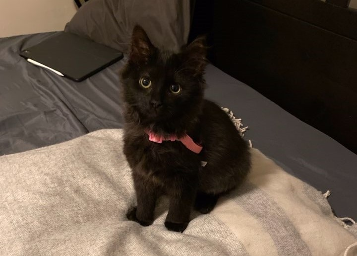

Our Story

It all started when we adopted Cece, a Maine Coon mix rescued from a hoarding case. We were looking for a friend for Nero, a cute Nebelung who always made sure to vocalize her boredom. Cece came to us with the diagnosis for megaesophagus, a disorder where an enlargement of the esophagus leads to a decreased to absent motility. Dogs have this condition to and you may have seen the treatment for it - an upright feeding position. After numerous x-rays and doctor's visits, we learned that Cece doesn't have an enlarged esophagus, rather a motility disorder, meaning she has a non-functional esophagus. No cause has been identified for her condition, but it's most likely to be due to greedy inbreeding.
Cece ocassionally suffers from aspiration pneumonia due to her inability to keep the food down, but with appropriate medications and feeding setup, she's thriving and continuing to gain weight. Cats with megaesophagus or similar conditions usually don't make it past their first year due to malnutrition, but Cece's future looks bright thanks to the medical team and wisdom shared by fellow pet owners. Nero had the strangest habit of pulling out her own poop from the litter box to play with it in the middle of the night when she got bored, but that hasn't happened since we got her a friend, and they're now inseparable!
Our experience with Cece taught us that any animal can be given a second chance at life with love, care, and compassion. The Greater Boston Humane Society was founded with our mission to support and improve the lives of our furry companions.
Contact Us
Adoption Center
 52 Commonwealth Avenue
52 Commonwealth Avenue
Boston, MA 02341
 (123) 456-7890
(123) 456-7890
 general@gbhs.org
general@gbhs.org
Medical Center
52 Commonwealth Avenue
Boston, MA 02341
(123) 456-7890
vet@gbhs.org